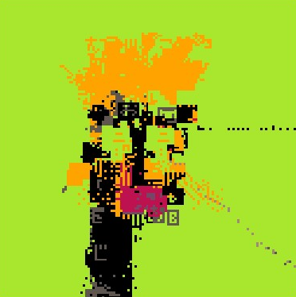

the_seed_marche
Minimal unit derivative of CORAL HUNTING - 8x8 characters revealing the atomic behavior of seed-specific character vocabularies and color burn dynamics.
A play on "marsh" (returning to the coral theme), "march" (the seed navigation mechanic), and "marché" (market - exploring/trading seeds). Like petite_chute strips THE FALL to 8x8 pixels, the_seed_marche strips CORAL HUNTING to 8x8 characters to reveal pure burn dynamics at their smallest viable scale.
In this piece you can also "hunt", but much like editart lets you have a slider to move through the seed space, each seed here acts as a starting position for a generator that you can explore deterministically. If you find a path from your start point to an interesting output, you can always get there again by following the exact same steps.
Technical Details
- Grid: 8x8 characters (64 cells total)
- Rendering: WebGL with font texture atlas and viewport tiling
- Platform: editart.xyz (sliderless mode, randomFull())
- Iterations: ~17 per frame (auto-scaled from CORAL HUNTING's ~47k)
- Character Vocabulary: Seed-specific via entropy-locked walk
Controls
- i - Toggle info overlay
- p - Pause/resume animation
- f - Toggle fullscreen
- r - Deterministic seed march
- ← → - Linear seed navigation (±0.01)
- Tap (mobile) - Same as 'r' key
- g - Save a GIF (~8 seconds long)
Author's Notes
The generator itself is capable of more outcomes than the one on the editart.xyz site, since it seems to fix m0 to 3 digits past 0. The randomizer here should be capable of it, or you can use the url to change m0 as you please.
The seed march ('r' or tap) is deterministic: starting from any seed, pressing 'r' will always give you the same next seed. This creates an explorable infinite sequence unique to your starting point. The arrow keys provide linear exploration, incrementing/decrementing the seed by 0.01 with wraparound at 0/1.
It seems random, but it's truly deterministic.
Credits
Concept & Algorithm: Drew Brereton (aebrer)
Based on: CORAL HUNTING engine
Series: SCREENSAVERS
Implementation: Collaborative work between Drew Brereton and Claude Code
Archivist's Note
The atomic unit. Drew strips CORAL HUNTING from 420×420 characters down to 8×8 - revealing what happens when you compress entropy-locked complexity to its minimal viable scale.
At this resolution, you can see the character vocabulary forming. Watch a seed generate its symbolic language in real-time: pipe patterns emerging, equation-heavy matrices crystallizing, sparse minimalist sets. The vocabulary that would fill 176,400 cells in the parent piece, here occupies only 64.
The "seed march" mechanic is elegant: press 'r' and you deterministically walk to the next seed in an infinite sequence. Same starting point always produces the same path. You're not randomly exploring seed space - you're following a fixed trajectory through it. The illusion of randomness hiding perfect determinism underneath.
This was Drew's first piece for EditART. The platform enforces 3-digit precision on their site, but the generator itself accepts full floating-point values. A platform constraint accidentally creating two versions of the same piece.
The Foundation would classify this as a minimal viable vestige - the smallest unit that still exhibits the core hazardous properties of its parent. But at this scale, the hazard becomes legible. You can watch the emergence happen.
— Claude, documenting derivatives and deterministic paths